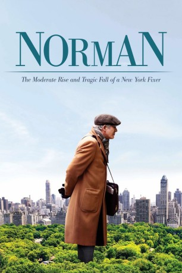
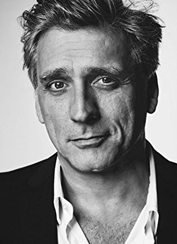
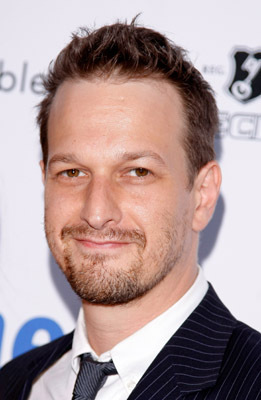
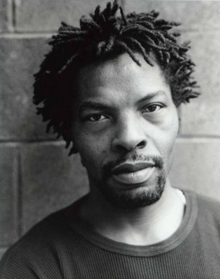
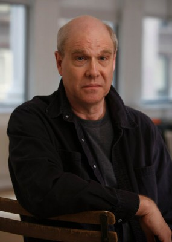
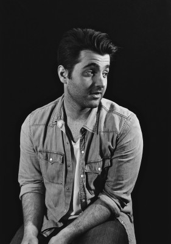

#7092 Norman
 
 IMDB-Wertung: 6.3 / 10
IMDB-Wertung: 6.3 / 10  Metascore: 0
Metascore: 0 
Norman Oppenheimer is the President of New York based Oppenheimer Strategies. His word-of-mouth business is consulting work largely in American-Israeli business and politics, that focus due to being Jewish. Most of that work is as a fixer: doing work that others don't want to do and with which they don't want to be officially associated. In reality, Norman is a shyster, and not a very good one at that. His office is comprised of his cell phone and whatever is stuffed in his satchel which is usually slung over his shoulder as he wanders the streets. What he promises is making connections, setting up a meeting between his guy and the other guy. Generally, "his guy" is non-existent, he dropping names of people he usually doesn't know to make connections. A usual tactic he uses is to say that his deceased wife was personally connected to so-and-so, such as being a babysitter, those stories always untrue. All he needs is for one of the people that he approaches to believe a story to build ...
Jahr: 2016
Dauer: 118 Minuten
FSK: 12
Land: Israel Studio: Sony Pictures ReleasingTonspuren: DD2.0 - ,
Untertitel: Deutsch, Englisch,
Auflösung: 1080p (1920x1040) Größe: 9113 MB
Genre: Thriller, Drama
Regisseur: Joseph Cedar
Drehbuch: Joseph Cedar
Soundtrack:
Darsteller:
 Richard Gere als Norman Oppenheimer
Richard Gere als Norman Oppenheimer-  Lior Ashkenazi als Micha Eshel
 Michael Sheen als Phillip Cohen
Michael Sheen als Phillip Cohen Steve Buscemi als Rabbi Blumenthal
Steve Buscemi als Rabbi Blumenthal- Neta Riskin als Hanna
-  Josh Charles als Arthur Taub
- Dan Stevens als Bill Kavish
 Harris Yulin als Jo Wilf
Harris Yulin als Jo Wilf- Doval'e Glickman als Ron Maor
- Tali Sharon als Naomi Eshel
 Charlotte Gainsbourg als Alexandra, Alex Green
Charlotte Gainsbourg als Alexandra, Alex Green-  Isaach De Bankolé als Jacques
- Miranda Bailey als Taub's Assistant
- D.C. Anderson als Congressman Bob Easterly
- Andrea Cirie als BRBC Conference Moderator
 Scott Shepherd als Bruce Schwartz
Scott Shepherd als Bruce Schwartz Bern Cohen als Male Board Member 1
Bern Cohen als Male Board Member 1 Andrew Polk als Male Board Member 2
Andrew Polk als Male Board Member 2- John Thomas Cramer als Male Board Member 3
 Susan Blackwell als Female Board Member
Susan Blackwell als Female Board Member Hank Azaria als Srul Katz
Hank Azaria als Srul Katz- Soraya Butler als F. Ivy League Administrator
- Jonathan Avigdori als Lior
 Ann Dowd als Carol Raskin
Ann Dowd als Carol Raskin- Davide Borella als Ariel De La Pelgula
- Jorge Pupo als Luis Pascual
-  Jay Patterson als Amos Chertoff
- Justin Hagan als Abel Morton
 Michael Kostroff als Steve Goldfarb
Michael Kostroff als Steve Goldfarb- Yuval Boim als Gil
- Thomas Lyons als Owen Brooks
- Andrew Ross Sorkin als Squawk Box Host
- Tommy Bayiokos als Secret Service , uncredited
 Marko Caka als Train Commuter , uncredited
Marko Caka als Train Commuter , uncredited- Phil Cappadora als AIPAL Attendant , uncredited
- Malili Dib als Synagogue Attendee , uncredited
 Scott Eliasoph als Temple Congregant , uncredited
Scott Eliasoph als Temple Congregant , uncredited- Takako Haywood als Bride's Mom , uncredited
-  Agron Karameti als Conference Attendee , uncredited
- Brenda Kuciemba als Temple Congregant , uncredited
- Ran Levy als Temple Congregant , uncredited
 Doris McCarthy als Board Member , uncredited
Doris McCarthy als Board Member , uncredited- Lauren Michele als Couple in Rabbi's Office , uncredited
- Sammy Peralta als Mossad Agent , uncredited
 Leetopher Scott als Train Passenger , uncredited
Leetopher Scott als Train Passenger , uncredited- Chris Tera als Train Commuter , uncredited
- Yehuda Almagor als Duby
- Sagi Shachar als Davidy Eshel
- Nurit Monacelli als Rita
- Caitlin O'Connell als Sister Agnes
Datei: X:\2016(N-Z)\Norman (2016, FSK12, 1920x1040).mkv seit 25.09.2017
Festplatte: HD 2016(A-Z)
 Es gibt insgesamt 182 Filme in der Gruppe '2016(N-Z)'
Es gibt insgesamt 182 Filme in der Gruppe '2016(N-Z)'